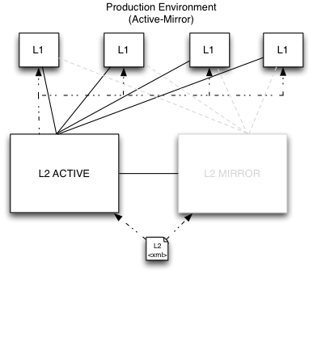

Configuration in a Production Environment
For an efficient production environment, it's recommended that you maintain one Terracotta configuration file. That file can be loaded by the Terracotta server (or servers) and pushed out to clients. While this is an optional approach, it's an effective way to centralize and decrease maintenance.
If your Terracotta configuration file uses "%i" for the hostname attribute in its server element, change it to the actual hostname in production. For example, if in development you used the following:
<server host="%i" name="Server1">
and the production host's hostname is myHostName, then change the host attribute to the myHostName:
<server host="myHostName" name="Server1">
Clients in Production
For clients in production, you can set up the Terracotta environment before launching your application.
Setting Up the Terracotta Environment
To start your application with the Terracotta client using your own scripts, first set the following environment variables:
TC_INSTALL_DIR=<path_to_local_Terracotta_home>
TC_CONFIG_PATH=<path/to/tc-config.xml>
or
TC_CONFIG_PATH=<server_host>:<tsa-port>
where <server_host>:<tsa-port> points to the running Terracotta server. The specified Terracotta server will push its configuration to the Terracotta client.
Alternatively, a client can specify that its configuration come from a server by setting the tc.config system property:
-Dtc.config=serverHost:tsaPort
If more than one Terracotta server is available, enter them in a comma-separated list:
TC_CONFIG_PATH=<server_host1>:<tsa-port>,<server_host2>:<tsa-port>
If <server_host1> is unavailable, <server_host2> is used.
Terracotta Products
Terracotta products can set a configuration path using their own configuration files.
For BigMemory Max and BigMemory Go, use the <terracottaConfig> element in the Ehcache configuration file ( ehcache.xml by default):
<terracottaConfig url="localhost:9510" />
For Quartz, use the org.quartz.jobStore.tcConfigUrl property in the Quartz properties file ( quartz.properties by default):
org.quartz.jobStore.tcConfigUrl = /myPath/to/tc-config.xml
For Terracotta Web Sessions, use the appropriate elements in web.xml or context.xml (see the Web Sessions User Guide).
 Contact Support
|
Community
|
Feedback
Contact Support
|
Community
|
Feedback